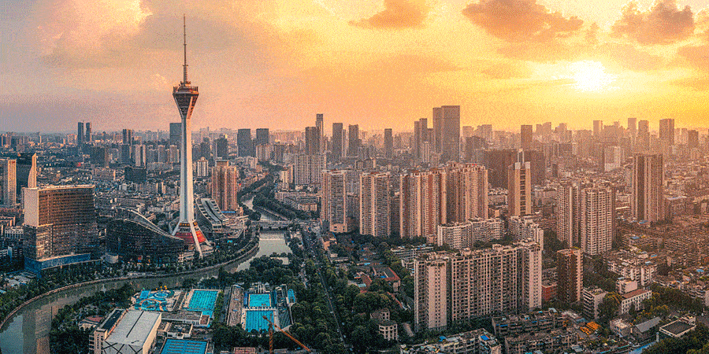

Yellowstone


Geographical Location: North America
Yellowstone is the first national park in the United States. It covers over 2.2 million acres, and provides an opportunity to see wildlife and explore geothermal areas. In fact, Yellowstone contains about half the world's active geysers.
These unique opportunities also bring out a lot of bad decisions among the tourists. Every year visitors injure themselves or the wildlife by getting close to the animals. You can see examples of people making bad decisions by visiting Yellowstone National Park: Invasion of the Idiots, Tourons of Yellowstone, or Cowboy State Daily.
Photo Gallery


Phuket

Geographical Location: South Thailand
Phuket the biggest Island of Thailand and sits on the Andaman sea. The nearest province to the north is Phang-nga and the nearest provinces to the east are Phang-nga and Krabi. Phuket has a large Chinese influence, so you will see many Chinese shrines and Chinese Restaurants around the City. A Chinese Vegetarian Festival is held there every year. While the Chinese community is quite big, there are many other ethnicities bringing all their traditions and festivals from all over the world to Phuket.
Being a big Island, Phuket is surrounded by many magnificent Beaches such as Rawai, Patong, Karon, Kamala, Kata Yai, Kata Noi, and Mai Khao. Laem Phromthep viewpoint is said to feature the most beautiful sunsets in Thailand.
Photo Gallery

Paris


Geographical Location: Europe
Paris lives up to its hype: A city with unbelievable food and culture, plus stunning views everywhere you turn. With 18 arrondissements, it's a lot to see in one trip, but each neighborhood has a personality all its own. You can't miss the iconic 7th, where art and history meet—there's the Eiffel Tower, sure, but the impressive Musée du quai Branly is just a short walk away. It houses an amazing collection of indigenous art. Or, hit up Montmartre (the 18th), with its boho shops and cozy brasseries. It's a must-stop on the way up or down from Sacre Coeur. While the French practically invented fine dining, don't skip the street food—Paris has world-class kebabs and falafel. But no matter where you are, be sure to pop into a sidewalk cafe, sip a glass of wine, and people watch—it's the way to get a taste of true Parisian culture.
Modern Paris owes much of its downtown plan and architectural harmony to Napoleon III and his Prefect of the Seine, Baron Haussmann. Between 1853 and 1870 they rebuilt the city centre, created the wide downtown boulevards and squares where the boulevards intersected, imposed standard facades along the boulevards, and required that the facades be built of the distinctive cream-grey "Paris stone". They also built the major parks around the city centre. The high residential population of its city centre also makes it much different from most other western major cities.
Photo Gallery


Bangkok


Geographical Location: Southeast Asia
Bangkok, Thailand's capital, is a large city known for ornate shrines and vibrant street life. It is officially known in Thai as Krung Thep Maha Nakhon and colloquially as Krung Thep.
Bangkok welcomes more visitors than any other city in the world and it doesn't take long to realize why. Bangkok is a city of contrasts with action at every turn. Marvel at the gleaming temples, catch a tuk tuk through bustling Chinatown or take a longtail boat through floating markets. Food is another Bangkok highlight, from local dishes served at humble street stalls to haute cuisine at romantic rooftop restaurants.
Photo Gallery


Barcelona

Geographical Location: Southwestern Europe
The name of this storied Catalan city, Barcelona, is almost as beautiful as the coastal metropolis itself. Nicknamed Ciudad Condol (once upon a time, the city was the seat of the Count of Barcelona) the destination sticks with anyone who wanders among the remarkable architecture and through the airy plaças. Nestled along the sparkling Mediterranean Sea in northeastern Spain, Barcelona is a colorful melting pot of culture, full of world-renowned cuisine, legendary art, music, and more.
Barcelona has a rich cultural heritage and is today an important cultural centre and a major tourist destination. Particularly renowned are the architectural works of Antoni Gaudí and Lluís Domènech i Montaner, which have been designated UNESCO World Heritage Sites.
Photo Gallery

Chengdu
Geographical Location: China
Chengdu is in central Sichuan. The surrounding Chengdu Plain is known as the "Country of Heaven" and the "Land of Abundance". Its prehistoric settlers included the Sanxingdui culture.
The site of Dujiangyan, an ancient irrigation system, is designated as a World Heritage Site. The Jin River flows through the city. Chengdu's culture largely reflects that of its province, Sichuan; in 2011, it was recognized by UNESCO as a city of gastronomy. It is associated with the giant panda, a Chinese national symbol, which inhabits the area of Sichuan; the city is home to the Chengdu Research Base of Giant Panda Breeding.